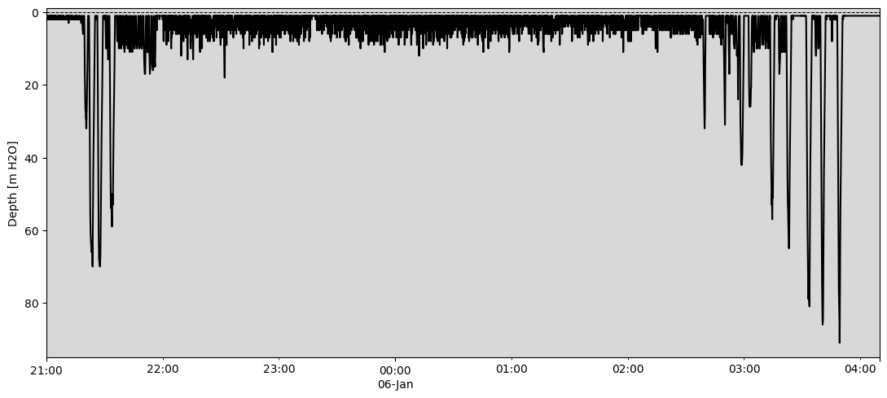
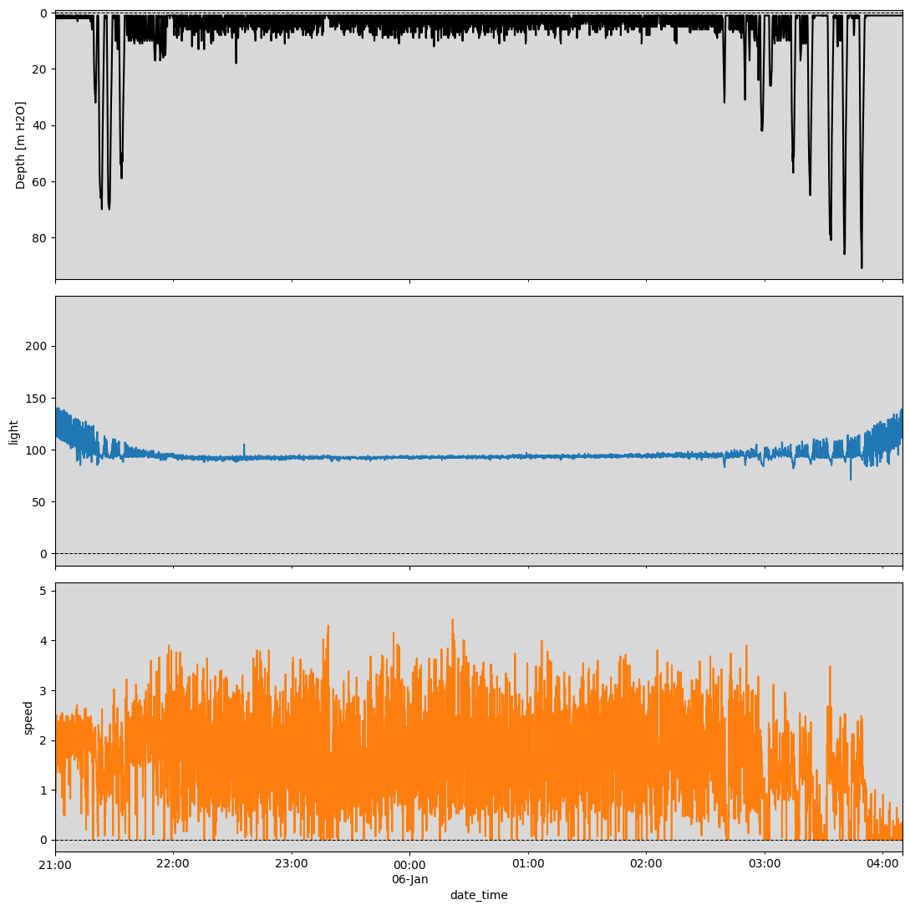
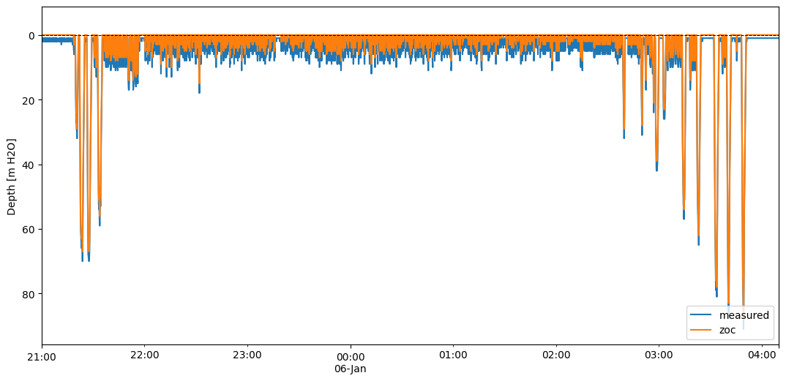
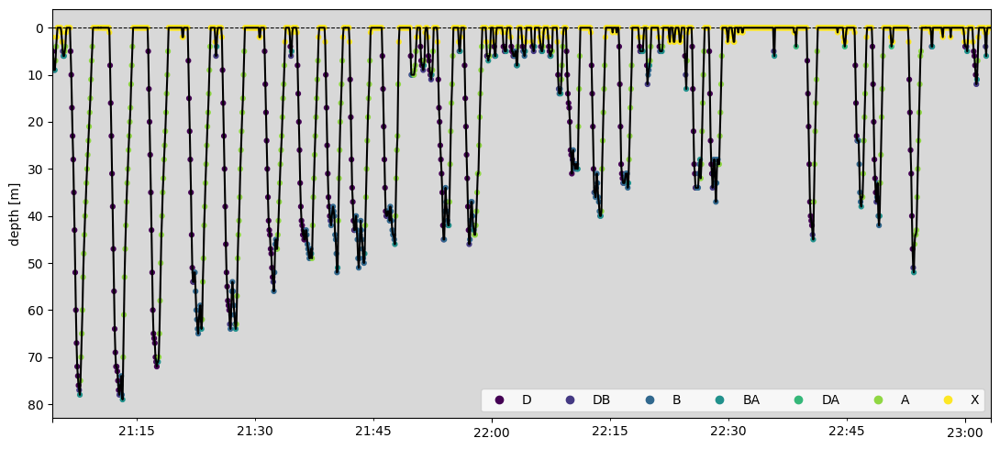
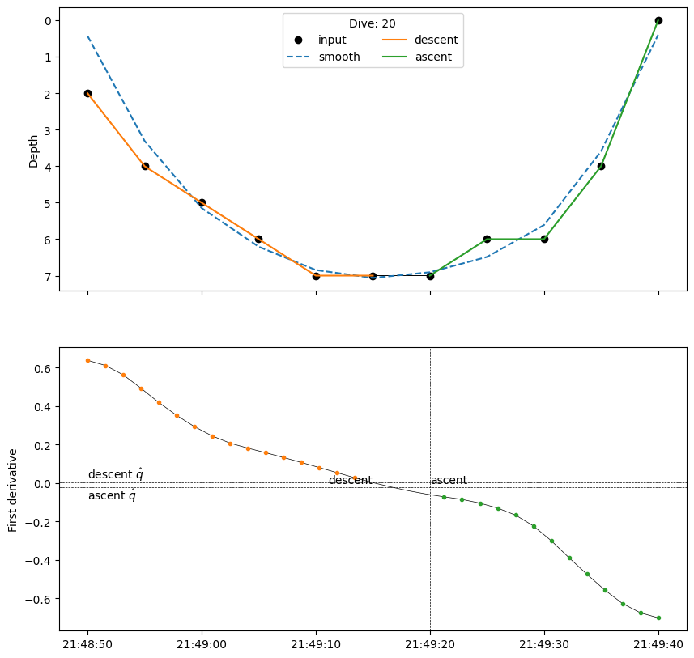
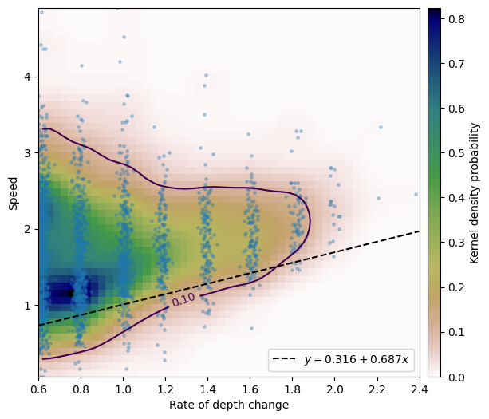

Diving behaviour analysis#
This is a bird’s-eye view of the functionality of scikit-diveMove,
loosely following diveMove’s
vignette.
Set up the environment. Consider loading the logging module and
setting up a logger to monitor progress to this section.
# Set up
import importlib.resources as rsrc
import matplotlib.pyplot as plt
import skdiveMove as skdive
# Declare figure sizes
_FIG1X1 = (11, 5)
_FIG2X1 = (10, 8)
_FIG3X1 = (11, 11)
Reading data files#
Load diveMove’s example data, using TDR.__init__() method, and
print:
1ifile = (rsrc.files("skdiveMove") / "tests" / "data" /
2 "ag_mk7_2002_022.nc")
3tdrX = skdive.TDR.read_netcdf(ifile, depth_name="depth",
4 time_name="date_time", has_speed=True)
5# Or simply use function `skdive.tests.diveMove2skd` to do the
6# same with this particular data set.
7print(tdrX)
Time-Depth Recorder -- Class TDR object
Source File /home/runner/work/scikit-diveMove/scikit-diveMove/skdiveMove/tests/data/ag_mk7_2002_022.nc
Sampling interval 0 days 00:00:05
Number of Samples 34199
Sampling Begins 2002-01-05 11:32:00
Sampling Ends 2002-01-07 11:01:50
Total duration 1 days 23:29:50
Measured depth range [-4.0,91.0]
Other variables ['light', 'temperature', 'speed']
Attributes:
animal_id: Ag_022
animal_species_common: Antarctic fur seal
animal_species_science: Arctocephalus gazella
data_creation_date: 2020-07-13 17:00:00
data_format: CSV
data_nfiles: 1
data_source: dives.csv
dep_device_regional_settings: YYYY-mm-dd HH:MM:SS
dep_device_tzone: +5
dep_id: ag_mk7_2002_022
deploy_device_time_on: 2002-01-05 11:32:00
deploy_lat: 51.9833294
deploy_locality: Iles Crozet, Southern Indian Ocean
deploy_lon: -46.416665
deploy_method: glued
device_make: Wildlife Computers
device_model: MK7
device_type: archival
project_date_beg: 2000-11-01
project_date_end: 2003-04-30
project_name: Antarctic and Subantarctic fur seal foraging/energetics
provider_affiliation: Centre d'Etudes Biologiques de Chize, France
provider_email: spluque@gmail.com
provider_license: AGPLv3
provider_name: Sebastian Luque
sensors_list: pressure,light,temperature,speed
ZOC method: None
ZOC parameters: None
Wet/Dry parameters: {}
Dives parameters: {}
Speed calibration coefficients: (a=None, b=None)
Notice that TDR.__init__() reads files in
NetCDF4 format, which is a
very versatile file format that encourages using properly documented data
sets. skdiveMove relies on xarray.Dataset objects to
represent such data sets. It is easy to generate a
xarray.Dataset objects from Pandas DataFrames by using method
to_xarray(). skdiveMove documents
processing steps by appending to the history attribute, in an effort
towards building metadata standards.
Access measured data:
tdrX.get_depth("measured")
<xarray.DataArray 'depth' (date_time: 34199)> Size: 274kB
array([+nan, +nan, +nan, ..., +nan, +nan, +nan], shape=(34199,))
Coordinates:
* date_time (date_time) datetime64[ns] 274kB 2002-01-05T11:32:00 ... 2002-...
Attributes:
sampling: regular
sampling_rate: 5
sampling_rate_units: s
name: P
full_name: Depth
description: dive depth
units: m H2O
units_name: meters H2O (salt)
units_label: meters
column_name: depth
axes: D
files: dives.csvPlot measured data:
tdrX.plot(xlim=["2002-01-05 21:00:00", "2002-01-06 04:10:00"],
depth_lim=[-1, 95], figsize=_FIG1X1);

Plot concurrent data:
ccvars = ["light", "speed"]
tdrX.plot(xlim=["2002-01-05 21:00:00", "2002-01-06 04:10:00"],
depth_lim=[-1, 95], concur_vars=ccvars, figsize=_FIG3X1);

Calibrate measurements#
Calibration of TDR measurements involves the following steps, which rely on data from pressure sensors (barometers):
Zero offset correction (ZOC) of depth measurements#
Using the offset method here for speed performance reasons:
1# Helper dict to set parameter values
2pars = {"offset_zoc": 3,
3 "dry_thr": 70,
4 "wet_thr": 3610,
5 "dive_thr": 3,
6 "dive_model": "unimodal",
7 "knot_factor": 3,
8 "descent_crit_q": 0,
9 "ascent_crit_q": 0}
10
11tdrX.zoc("offset", offset=pars["offset_zoc"])
12
13# Plot ZOC job
14tdrX.plot_zoc(xlim=["2002-01-05 21:00:00", "2002-01-06 04:10:00"],
15 figsize=(13, 6));

Detection of wet vs dry phases#
Periods of missing depth measurements longer than dry_thr are considered
dry phases, whereas periods that are briefer than wet_thr are not
considered to represent a transition to a wet phase.
tdrX.detect_wet(dry_thr=pars["dry_thr"], wet_thr=pars["wet_thr"])
R callback write-console: Record is complete
7 phases detected
Other options, not explored here, include providing a boolean mask Series
to indicate which periods to consider wet phases (argument wet_cond), and
whether to linearly interpolate depth through wet phases with duration
below wet_thr (argument interp_wet).
Detection of dive events#
When depth measurements are greater than dive_thr, a dive event is deemed
to have started, ending when measurements cross that threshold again.
tdrX.detect_dives(dive_thr=pars["dive_thr"])
R callback write-console: 426 dives detected
Detection of dive phases#
Two methods for dive phase detection are available (unimodal and
smooth.spline), and this demo uses the default unimodal method:
1tdrX.detect_dive_phases(dive_model=pars["dive_model"],
2 knot_factor=pars["knot_factor"],
3 descent_crit_q=pars["descent_crit_q"],
4 ascent_crit_q=pars["ascent_crit_q"])
5
6print(tdrX)
Time-Depth Recorder -- Class TDR object
Source File /home/runner/work/scikit-diveMove/scikit-diveMove/skdiveMove/tests/data/ag_mk7_2002_022.nc
Sampling interval 0 days 00:00:05
Number of Samples 34199
Sampling Begins 2002-01-05 11:32:00
Sampling Ends 2002-01-07 11:01:50
Total duration 1 days 23:29:50
Measured depth range [-4.0,91.0]
Other variables ['light', 'temperature', 'speed']
Attributes:
animal_id: Ag_022
animal_species_common: Antarctic fur seal
animal_species_science: Arctocephalus gazella
data_creation_date: 2020-07-13 17:00:00
data_format: CSV
data_nfiles: 1
data_source: dives.csv
dep_device_regional_settings: YYYY-mm-dd HH:MM:SS
dep_device_tzone: +5
dep_id: ag_mk7_2002_022
deploy_device_time_on: 2002-01-05 11:32:00
deploy_lat: 51.9833294
deploy_locality: Iles Crozet, Southern Indian Ocean
deploy_lon: -46.416665
deploy_method: glued
device_make: Wildlife Computers
device_model: MK7
device_type: archival
project_date_beg: 2000-11-01
project_date_end: 2003-04-30
project_name: Antarctic and Subantarctic fur seal foraging/energetics
provider_affiliation: Centre d'Etudes Biologiques de Chize, France
provider_email: spluque@gmail.com
provider_license: AGPLv3
provider_name: Sebastian Luque
sensors_list: pressure,light,temperature,speed
ZOC method: offset
ZOC parameters: {'offset': 3}
Wet/Dry parameters: {'dry_thr': 70, 'wet_thr': 3610}
Dives parameters: {'dive_thr': 3, 'dive_model': 'unimodal', 'smooth_par': 0.1, 'knot_factor': 3, 'descent_crit_q': 0, 'ascent_crit_q': 0}
Speed calibration coefficients: (a=None, b=None)
Alternatively, all these steps can be performed together via the
calibrate() function:
help(skdive.calibrate)
Help on function calibrate in module skdiveMove.tdr:
calibrate(tdr_file, config_file=None)
Perform all major TDR calibration operations
Detect periods of major activities in a `TDR` object, calibrate depth
readings, and speed if appropriate, in preparation for subsequent
summaries of diving behaviour.
This function is a convenience wrapper around :meth:`~TDR.detect_wet`,
:meth:`~TDR.detect_dives`, :meth:`~TDR.detect_dive_phases`,
:meth:`~TDR.zoc`, and :meth:`~TDR.calibrate_speed`. It performs
wet/dry phase detection, zero-offset correction of depth, detection of
dives, as well as proper labelling of the latter, and calibrates speed
data if appropriate.
Due to the complexity of this procedure, and the number of settings
required for it, a calibration configuration file (JSON) is used to
guide the operations.
Parameters
----------
tdr_file : str, Path or xarray.backends.*DataStore
As first argument for :func:`xarray.load_dataset`.
config_file : str
A valid string path for TDR calibration configuration file.
Returns
-------
out : TDR
See Also
--------
dump_config_template : configuration template
which is demonstrated in the bouts demo.
Plot dive phases#
Once TDR data are properly calibrated and phases detected, results can be visualized:
tdrX.plot_phases(diveNo=list(range(250, 300)), surface=True, figsize=_FIG1X1);

# Plot dive model for a dive
tdrX.plot_dive_model(diveNo=20, figsize=(10, 10));

Calibrate speed measurements#
In addition to the calibration procedure described above, other variables
in the data set may also need to be calibrated. skdiveMove provides
support for calibrating speed sensor data, by taking advantage of its
relationship with the rate of change in depth in the vertical dimension.
1fig, ax = plt.subplots(figsize=(7, 6))
2# Consider only changes in depth larger than 2 m
3tdrX.calibrate_speed(z=2, ax=ax)
4print(tdrX.speed_calib_fit.summary())
QuantReg Regression Results
==============================================================================
Dep. Variable: y Pseudo R-squared: 0.07433
Model: QuantReg Bandwidth: 0.2129
Method: Least Squares Sparsity: 2.682
Date: Wed, 18 Mar 2026 No. Observations: 2108
Time: 14:44:59 Df Residuals: 2106
Df Model: 1
==============================================================================
coef std err t P>|t| [0.025 0.975]
------------------------------------------------------------------------------
Intercept 0.3163 0.049 6.405 0.000 0.219 0.413
x 0.6872 0.049 13.902 0.000 0.590 0.784
==============================================================================

Notice processing steps have been appended to the history attribute of
the xarray.DataArray:
1print("Zero-offset-corrected depth:\n{}\n".format(tdrX.get_depth("zoc")))
2print("Calibrated speed:\n{}\n".format(tdrX.get_speed("calibrated")))
Zero-offset-corrected depth:
<xarray.DataArray 'depth' (date_time: 34199)> Size: 274kB
array([+nan, +nan, +nan, ..., +nan, +nan, +nan], shape=(34199,))
Coordinates:
* date_time (date_time) datetime64[ns] 274kB 2002-01-05T11:32:00 ... 2002-...
Attributes: (12/13)
sampling: regular
sampling_rate: 5
sampling_rate_units: s
name: P
full_name: Depth
description: dive depth
... ...
units_name: meters H2O (salt)
units_label: meters
column_name: depth
axes: D
files: dives.csv
history: ZOC
Calibrated speed:
<xarray.DataArray 'speed' (date_time: 34199)> Size: 274kB
array([+nan, +nan, +nan, ..., +nan, +nan, +nan], shape=(34199,))
Coordinates:
* date_time (date_time) datetime64[ns] 274kB 2002-01-05T11:32:00 ... 2002-...
Attributes: (12/13)
sampling: regular
sampling_rate: 5
sampling_rate_units: s
name: S
full_name: Speed
description: speed with respect to medium
... ...
units_name: meters per second
units_label: meters m/s
column_name: speed
axes: F
files: dives.csv
history: speed_calib_fit
Access attributes of TDR instance#
Following calibration, use the different accessor methods:
1print("Wet/dry phases:\n{}\n".format(tdrX.wet_dry))
2
3print("Parameters applied:\n{}\n"
4 .format(tdrX.get_phases_params("wet_dry")["dry_thr"]))
5
6print("Parameters applied:\n{}\n"
7 .format(tdrX.get_phases_params("wet_dry")["wet_thr"]))
8
9print("Row IDs:\n{}\n"
10 .format(tdrX.get_dives_details("row_ids")))
11
12print("Spline derivatives:\n{}\n"
13 .format(tdrX.get_dives_details("spline_derivs")))
14
15print("Critical values for phase detection:\n{}\n"
16 .format(tdrX.get_dives_details("crit_vals")))
Wet/dry phases:
phase_id phase_label
date_time
2002-01-05 11:32:00 1 L
2002-01-05 11:32:05 1 L
2002-01-05 11:32:10 1 L
2002-01-05 11:32:15 1 L
2002-01-05 11:32:20 1 L
... ... ...
2002-01-07 11:01:30 7 L
2002-01-07 11:01:35 7 L
2002-01-07 11:01:40 7 L
2002-01-07 11:01:45 7 L
2002-01-07 11:01:50 7 L
[34199 rows x 2 columns]
Parameters applied:
70
Parameters applied:
3610
Row IDs:
dive_id postdive_id dive_phase
date_time
2002-01-05 11:32:00 0 0 X
2002-01-05 11:32:05 0 0 X
2002-01-05 11:32:10 0 0 X
2002-01-05 11:32:15 0 0 X
2002-01-05 11:32:20 0 0 X
... ... ... ...
2002-01-07 11:01:30 0 426 X
2002-01-07 11:01:35 0 426 X
2002-01-07 11:01:40 0 426 X
2002-01-07 11:01:45 0 426 X
2002-01-07 11:01:50 0 426 X
[34199 rows x 3 columns]
Spline derivatives:
y
1 0 days 00:00:00 1.449
0 days 00:00:01.363636364 1.386
0 days 00:00:02.727272727 1.223
0 days 00:00:04.090909091 0.953
0 days 00:00:05.454545455 0.594
... ...
426 0 days 00:02:38.465346535 -0.935
0 days 00:02:40.099009901 -0.967
0 days 00:02:41.732673267 -0.992
0 days 00:02:43.366336634 -1.011
0 days 00:02:45 NaN
[10920 rows x 1 columns]
Critical values for phase detection:
descent_crit ascent_crit descent_crit_rate ascent_crit_rate
dive_id
1 1 2.0 1.989e-01 -1.989e-01
2 11 12.0 5.317e-02 -2.508e-03
3 15 21.0 7.406e-04 -1.047e-01
4 16 17.0 4.277e-03 -2.780e-02
5 3 4.0 1.012e-01 -2.485e-02
... ... ... ... ...
422 10 17.0 1.857e-03 -5.450e-04
423 9 16.0 8.120e-03 -1.982e-01
424 8 13.0 2.544e-01 -1.630e-01
425 11 15.0 3.591e-03 -7.462e-02
426 14 15.0 4.773e-02 -7.283e-02
[426 rows x 4 columns]
Time budgets#
1print("Ignore trivial aquatic periods and account for all phases:\n{}\n"
2 .format(tdrX.time_budget(ignore_z=True, ignore_du=False)))
3print("Ignore trivial aquatic periods, and underwater and diving:\n{}\n"
4 .format(tdrX.time_budget(ignore_z=True, ignore_du=True)))
Ignore trivial aquatic periods and account for all phases:
beg phase_label end
phase_id
1 2002-01-05 11:32:00 L 2002-01-05 11:39:40
2 2002-01-05 11:39:45 W 2002-01-05 11:42:05
3 2002-01-05 11:42:10 U 2002-01-05 11:42:10
4 2002-01-05 11:42:15 W 2002-01-05 11:46:10
5 2002-01-05 11:46:15 U 2002-01-05 11:46:15
... ... ... ...
2928 2002-01-07 09:06:25 U 2002-01-07 09:06:25
2929 2002-01-07 09:06:30 W 2002-01-07 09:06:55
2930 2002-01-07 09:07:00 U 2002-01-07 09:07:00
2931 2002-01-07 09:07:05 W 2002-01-07 11:00:05
2932 2002-01-07 11:00:10 L 2002-01-07 11:01:50
[2932 rows x 3 columns]
Ignore trivial aquatic periods, and underwater and diving:
beg phase_label end
phase_id
1 2002-01-05 11:32:00 L 2002-01-05 11:39:40
2 2002-01-05 11:39:45 W 2002-01-06 06:30:00
3 2002-01-06 06:30:05 L 2002-01-06 17:01:10
4 2002-01-06 17:01:15 W 2002-01-07 05:00:30
5 2002-01-07 05:00:35 L 2002-01-07 07:34:00
6 2002-01-07 07:34:05 W 2002-01-07 11:00:05
7 2002-01-07 11:00:10 L 2002-01-07 11:01:50
Dive statistics#
print(tdrX.dive_stats())
begdesc enddesc begasc desctim \
1 2002-01-05 12:20:15 2002-01-05 12:20:15 2002-01-05 12:20:20 2.5
2 2002-01-05 21:19:45 2002-01-05 21:20:35 2002-01-05 21:20:40 52.5
3 2002-01-05 21:22:10 2002-01-05 21:23:20 2002-01-05 21:23:50 72.5
4 2002-01-05 21:26:25 2002-01-05 21:27:40 2002-01-05 21:27:45 77.5
5 2002-01-05 21:30:40 2002-01-05 21:30:50 2002-01-05 21:30:55 12.5
.. ... ... ... ...
422 2002-01-07 03:54:15 2002-01-07 03:55:00 2002-01-07 03:55:35 47.5
423 2002-01-07 03:57:35 2002-01-07 03:58:15 2002-01-07 03:58:50 42.5
424 2002-01-07 04:00:55 2002-01-07 04:01:30 2002-01-07 04:01:55 37.5
425 2002-01-07 04:04:50 2002-01-07 04:05:40 2002-01-07 04:06:00 52.5
426 2002-01-07 04:13:40 2002-01-07 04:14:45 2002-01-07 04:14:50 67.5
botttim asctim divetim descdist bottdist ascdist ... ascD_mean \
1 5.0 2.5 10.0 6.0 0.0 6.0 ... -1.253
2 5.0 42.5 100.0 29.0 0.0 29.0 ... -0.630
3 30.0 72.5 175.0 63.0 8.0 67.0 ... -0.849
4 5.0 82.5 165.0 67.0 1.0 66.0 ... -0.769
5 5.0 7.5 25.0 7.0 0.0 7.0 ... -0.716
.. ... ... ... ... ... ... ... ...
422 35.0 57.5 140.0 54.0 10.0 54.0 ... -0.851
423 35.0 52.5 130.0 54.0 9.0 59.0 ... -1.041
424 25.0 77.5 140.0 57.0 20.0 77.0 ... -0.917
425 20.0 67.5 140.0 77.0 12.0 70.0 ... -0.989
426 5.0 87.5 160.0 86.0 2.0 84.0 ... -0.930
ascD_std ascD_min ascD_25% ascD_50% ascD_75% ascD_max \
1 0.222 -1.449 -1.402 -1.305 -1.156 -0.953
2 0.175 -0.810 -0.740 -0.701 -0.572 -0.152
3 0.153 -1.172 -0.929 -0.807 -0.759 -0.482
4 0.216 -1.055 -0.949 -0.777 -0.654 -0.134
5 0.139 -0.810 -0.807 -0.786 -0.680 -0.438
.. ... ... ... ... ... ...
422 0.225 -1.140 -1.008 -0.887 -0.713 -0.213
423 0.387 -1.832 -1.255 -0.936 -0.729 -0.539
424 0.382 -1.822 -0.958 -0.745 -0.713 -0.163
425 0.359 -1.655 -1.224 -0.883 -0.766 -0.153
426 0.319 -1.619 -1.063 -0.827 -0.708 -0.315
postdive_dur postdive_tdist postdive_mean_speed
1 0 days 08:59:15 50785.609 1.575
2 0 days 00:00:40 27.279 0.682
3 0 days 00:01:15 63.263 0.844
4 0 days 00:01:25 161.248 1.897
5 0 days 00:00:25 39.568 1.583
.. ... ... ...
422 0 days 00:00:55 37.836 0.688
423 0 days 00:01:05 32.042 0.534
424 0 days 00:01:30 16.169 0.190
425 0 days 00:06:25 -107.598 -0.291
426 0 days 06:45:30 -4925.427 -0.329
[426 rows x 46 columns]
Dive stamps#
print(tdrX.stamp_dives())
phase_id beg end
dive_id
1 2 2002-01-05 12:20:15 2002-01-06 03:50:40
2 2 2002-01-05 12:20:15 2002-01-06 03:50:40
3 2 2002-01-05 12:20:15 2002-01-06 03:50:40
4 2 2002-01-05 12:20:15 2002-01-06 03:50:40
5 2 2002-01-05 12:20:15 2002-01-06 03:50:40
... ... ... ...
422 4 2002-01-06 17:31:35 2002-01-07 04:16:15
423 4 2002-01-06 17:31:35 2002-01-07 04:16:15
424 4 2002-01-06 17:31:35 2002-01-07 04:16:15
425 4 2002-01-06 17:31:35 2002-01-07 04:16:15
426 4 2002-01-06 17:31:35 2002-01-07 04:16:15
[426 rows x 3 columns]